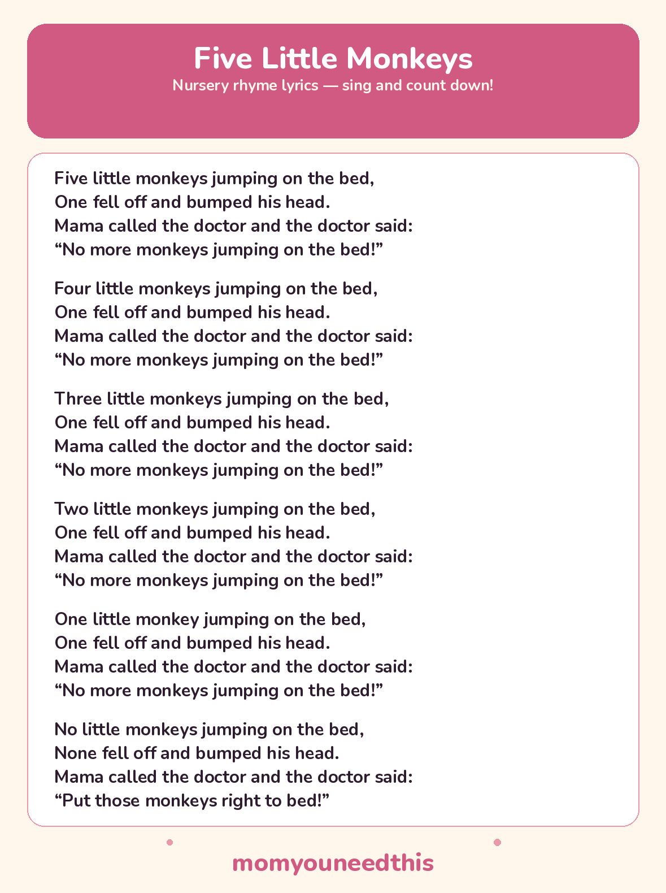

Five Little Monkeys The Counting Rhyme, With Lyrics and a Free Printable
This is the rhyme toddlers turn into a countdown game: hold up five fingers, lose one per verse, and let them shout the numbers down. The doctor's phone call is the bit they wait for — save your best stern voice for it.
Last updated: October 25, 2026
Quick Answer
Five Little Monkeys is a counting nursery rhyme sung to a bouncy tune. Five monkeys jump on a bed, one falls off in each verse, and the count drops — five, four, three, two, one — until no monkeys are left. The full lyrics and a free printable sheet are below.
At a Glance
- Rhyme: Five Little Monkeys
- Type: Counting rhyme
- Verses: 6 — the countdown from 5 to 1, plus the closing verse
- Best for: Ages 2–5
- Printable: 1 lyrics sheet
- Cost: Free — print at home
🎵 Five Little Monkeys Lyrics
Five little monkeys jumping on the bed,
One fell off and bumped his head.
Mama called the doctor and the doctor said:
“No more monkeys jumping on the bed!”
Four little monkeys jumping on the bed,
One fell off and bumped his head.
Mama called the doctor and the doctor said:
“No more monkeys jumping on the bed!”
Three little monkeys jumping on the bed,
One fell off and bumped his head.
Mama called the doctor and the doctor said:
“No more monkeys jumping on the bed!”
Two little monkeys jumping on the bed,
One fell off and bumped his head.
Mama called the doctor and the doctor said:
“No more monkeys jumping on the bed!”
One little monkey jumping on the bed,
One fell off and bumped his head.
Mama called the doctor and the doctor said:
“No more monkeys jumping on the bed!”
No little monkeys jumping on the bed,
None fell off and bumped his head.
Mama called the doctor and the doctor said:
“Put those monkeys right to bed!”

✂️ Download Your Free Five Little Monkeys Lyrics Sheet
All the lyrics from this page on one sheet, in big, well-spaced type for young readers.
⬇️ Download Free Lyrics Sheet 🖨️ Print🎁 Free printable for ages 2–5
🐵 Count Along on Your Fingers
The actions are the counting. Hold up five fingers and wiggle them for the jumping monkeys. When one falls off, fold one finger down — four monkeys left. Mime holding a phone to your ear for “Mama called the doctor,” then wag one finger, doctor-style, for the “No more monkeys” line. By the closing verse, every finger is folded and the monkeys are in bed.
Keep little bodies off real beds for this one — the rhyme’s own doctor gives good advice. Bounce a soft toy on a cushion instead, or let children bounce on the floor in time with the beat, folding a finger down each verse. The jump is pretend; the counting is completely real.
🖨️ How to Use This Rhyme
- Sing the countdown. Start with five fingers held up and sing one verse per number, all the way down to one, then finish with the closing verse.
- Fold one finger each verse. Your child folds a finger down every time a monkey falls off, so the fingers left match the monkeys left.
- Print the lyrics sheet. Keep it where you sing — by the bed or the reading chair — so anyone can lead the song.
- Let your child “read” it back. Pointing at each verse and singing it from memory is early reading practice, number words included.
🎵 More Rhymes & Fun
🎵 Sing More Rhymes
Every rhyme in this set lives on one hub page, with lyrics and a printable for each. Browse the collection.
🎵 Here We Go Round the Mulberry Bush
The circle singing game with morning-routine actions to mime. Read the lyrics.
🎵 Jack Be Nimble
The tiny jumping rhyme — one verse, one very proud jump. Read the lyrics.
📚 Learning Activities
The full hub of free printable activities for toddlers and preschoolers. Browse activities.
❓ Five Little Monkeys FAQ
What are the lyrics to Five Little Monkeys?
They are printed in full above — five countdown verses, from five monkeys down to one, plus the closing verse where the doctor sends the monkeys to bed. The same lyrics are on the free printable sheet, so you can sing along without the screen.
What age is Five Little Monkeys for?
It suits ages 2 to 5 best. Toddlers love the bouncing rhythm and the falling-off moment, while preschoolers take over the finger counting and start joining in with the number words on their own.
Can I print the lyrics sheet?
Yes — the lyrics sheet is free to print at home with no signup. It is one page, and it carries exactly the same verses as this page, in big, well-spaced type for young readers.
Does Five Little Monkeys help with counting?
Yes — it is a backwards countdown practised out loud. Each verse leaves one monkey fewer, and folding a finger down each time makes that “one less” visible, which is the first step toward taking away.